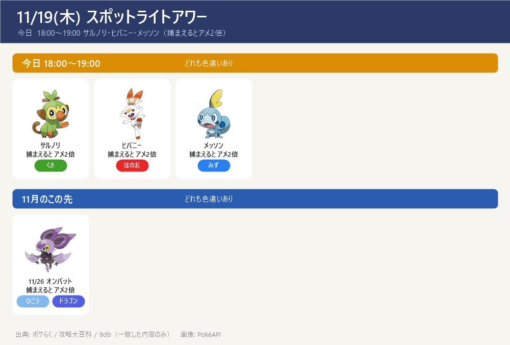
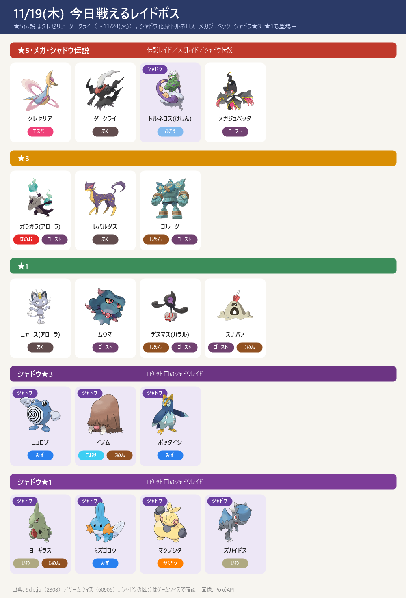
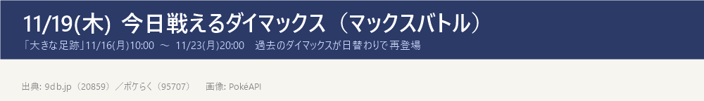

今日のポイント
- 今日 18:00〜19:00 スポットライトアワー：サルノリ・ヒバニー・メッソン（捕まえるとアメ2倍・どれも色違いあり・下の欄）。ガラル御三家をまとめて捕まえてアメを稼ぐチャンスです
- ★5伝説レイド：クレセリア・ダークライ（6:00〜〈9dbは5:00〉・〜11/24(火)21:00）。クレセリア（エスパー）→ ゴースト・あく・むし技、ダークライ（あく）→ フェアリー・かくとう・むし技が有効。どちらも色違いあり
- シャドウ化身トルネロス（シャドウ★5伝説、〜12/1(火)）と、シャドウ★3・★1レイド（ニョロゾ・イノムー・ポッタイシ／ヨーギラス・ミズゴロウ・マクノシタ・ズガイドス）が登場中。メガジュペッタ（メガレイド、〜11/25(水)5:00）も継続
- 「大きな足跡」開催中（〜11/23(月)20:00）。過去のダイマックスが日替わり・場所ごとに再登場。マックス粒子とアメを集めつつ、11/21(土)のムゲンダイナ特別マックスバトルに備えられます
- 今日 9:00 東京の巣が新しい期間に（隔週木曜に入れ替わり）。報告が集まるまで数日かかります。巣ページは 最新の巣
スポットライトアワー

- 今日 11/19(木) 18:00〜19:00：サルノリ・ヒバニー・メッソン（ガラル御三家・どれも色違いあり） ボーナス：捕まえるとアメ2倍
- 捕獲でアメ2倍の時間なので、進化やわざマシン用のアメをまとめて稼げます。ほしのかけらは無関係（すな2倍ではありません）。いらない個体は博士に送ってさらにアメに
- 11月のこの先：11/26(木) オンバット（捕まえるとアメ2倍）
- 対象はどれも色違いあり（ポケらく・攻略大百科で一致）
今日戦えるレイドボス
★5伝説はクレセリア・ダークライ（〜11/24(火)）。シャドウ化身トルネロス・メガジュペッタ・シャドウ★3・★1も登場中

今日戦えるダイマックス（マックスバトル）
「大きな足跡」11/16(月)10:00 〜 11/23(月)20:00 過去のダイマックスが日替わりで再登場
- 「大きな足跡」では過去にマックスバトルへ登場した（準伝説・伝説を除く）ダイマックスが日替わり・場所ごとに登場します。今日の固定ボスは各サイトとも発表しておらず予想のみのため、戦えるボスはゲーム内のパワースポットで確認してください
- ムゲンダイナ（ムゲンダイマックス）の特別マックスバトルは 11/21(土) 11:00〜14:00。ここに向けてマックス粒子（上限1,500）を貯めておくと安心です
- 11/23(月)はマックスマンデーで、ニャスパーがダイマックス初登場（色違いの可能性あり）。「大きな足跡」の最終日でもあります

サカキ対策（シャドウゼクロム）：攻略ページへ（別ページ）
締め切り・やること：まとめページへ（別ページ）
この先の予定（タップで開閉）
- 11/21(土) 11:00〜14:00 ムゲンダイナ（ムゲンダイマックス）特別マックスバトル
- 11/21(土) 14:00〜17:00 コミュニティデイ：コマタナ（進化でドドゲザンが特別技「ドゲザン」）
- 11/22(日) 23:59 ぎんのおうかんの使用期限（ザシアンの攻撃特訓に）
- 11/23(月) マックスマンデー：ニャスパー（ダイマックス初登場）／「大きな足跡」20:00 終了
- 11/24(火) 21:00 クレセリア・ダークライのレイド終了／夜は満月（ガチグマに進化可能）
- 11/24(火) 10:00〜11/30(月) 20:00 新イベント「黄昏時の願い」
- 11/25(水) 5:00〜 伝説レイドにデオキシス（各フォルム）登場・18:00〜19:00 レイドアワー／メガジュペッタ終了
- 11/26(木) 18:00〜19:00 スポットライトアワー：オンバット（捕まえるとアメ2倍）
- 12/1(火) シャドウ化身トルネロス終了
サイトで違っていた点（タップで開閉）
- レイドの入れ替わり時刻: 5:00（9db）と 6:00（他サイト）で違い。ゲーム内で確認を
- シャドウ★3・★1の区分: ゲームウィズは通常レイドとシャドウを分けて表示、9db は同じ表に混ぜて表示。両サイトで出現ポケモン自体は一致したため、区分はゲームウィズに合わせて記載
- マックスバトルの当日ボス: 「大きな足跡」は過去ダイマックスが日替わり・場所ごとで、固定ボスの発表なし → 当日ボスは載せず（ゲーム内のパワースポットで確認）。このため今日はダイマックスの画像カードはありません
- 11/19(木) スポットライトアワー サルノリ・ヒバニー・メッソン（捕まえるとアメ2倍）は 9db(4351)・ポケらく(post20283) で一致
- ダイマックスボスの技候補はゲームデータ(PvPoke)から（おんがえし・やつあたりは除外）、威力は pogoapi.net
出典: 9db.jp/pokemongo（開催イベント一覧4351・レイド日程2308・マックスバトル日程20859）／pokemongo.gamewith.jp（60906）／pokemongo-raku.com（95707・スポットライトアワー post20283）／pokemon.gamepedia.jp/go（攻略大百科 77843）／pvpoke.com ゲームデータ（技候補）
画像: PokéAPI ／ 2サイト以上で一致した情報だけを載せています